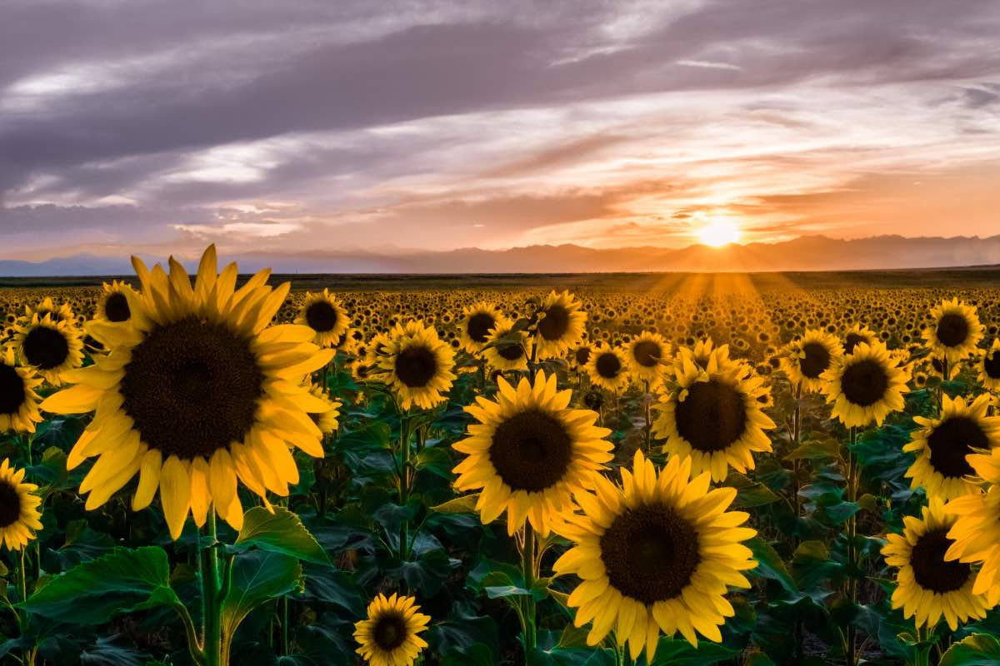

Sunflowers

About Sunflowers
Sunflowers (Helianthus annuus) are very common flowers and often grow wild throughout North America. Sunflowers come in a variety of different colors, but are most common in yellow. Their seeds provide good nutrition for a variety of animals, especially birds. They are a full sun flower and bloom in the summertime.
Growing Sunflowers
Sunflowers are very easy to grow and only require sufficient room, sunlight, and water to flourish. They can be started from seeds and will grow very quickly once planted. They are good for all manner of pollinators, including butterflies. Vartieties that grow very tall may require shelter from strong winds.